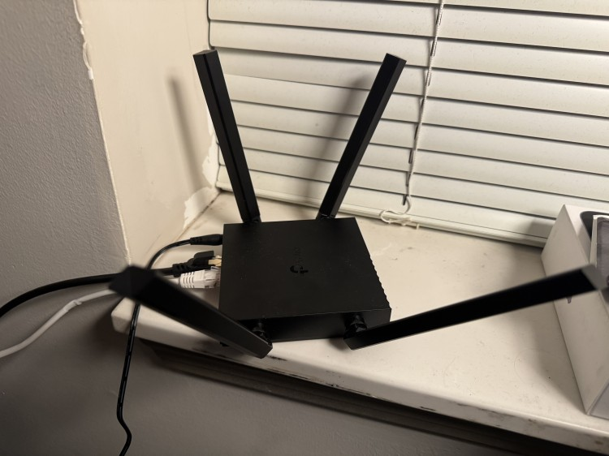
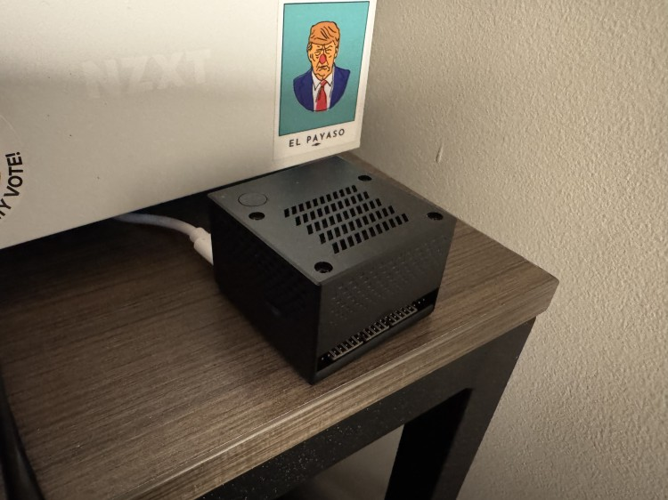
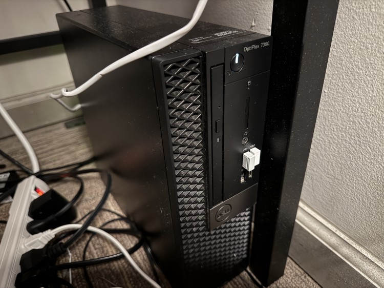
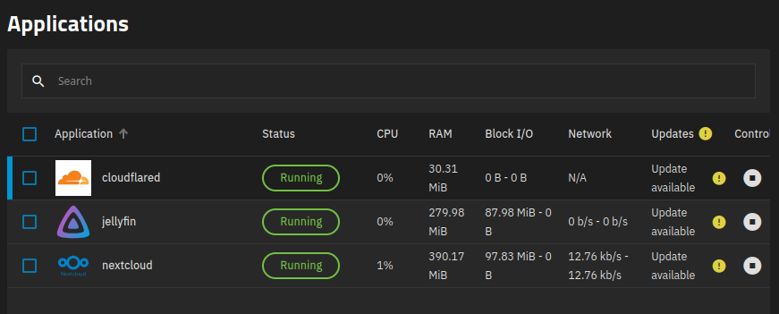
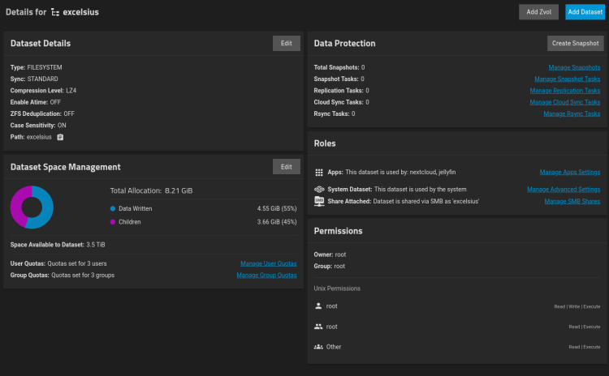
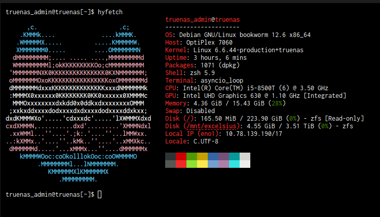
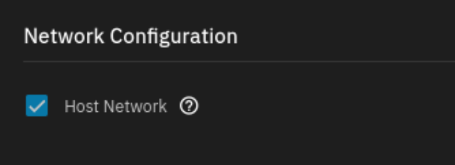
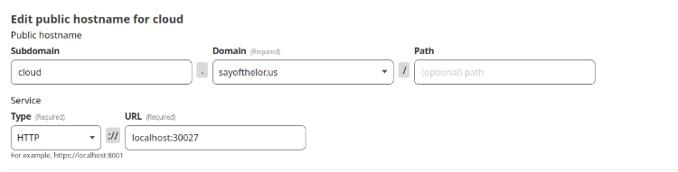

sad news coming out of the US recently (i'm cooked but that's neither here nor there) but that's not what this article is about so on i go about something unrelated in an effort to ignore it lolololol
i recently deployed some cloud stuff so i can reduce my dependency on big ass services that at some point (a nextcloud instance and a jellyfin instance) and the story of running something like this out of a college dorm is something fun i think that people could probably learn quite a bit from, so it's Learning Time
section 1: wi-fi
it's worth noting both solutions i have used (we'll get to that in a bit) have no wi-fi, so i've had to run a numerous amount of hilarious workarounds. initially, i was running a network share through my dorm's gated wi-fi network through the ethernet port on my main PC. i would highly recommend not doing this, as a lot of things can go wrong and it's a massive extra point of failure.
as of now, i'm currently running a cheap router running as a wifi extender

the setup (nicer cable is running to my main pc, worse [included] cable is running to my server)
this is a tp-link ac1200 and i didn't know this at the time but it is important to note that even though it does support max bandwidth wi-fi 5, all ethernet ports except for the input port are only a 100 mpbs link. this isn't too big a deal for me, since my dorm network is capped at 100 mbps anyway, but it still does reduce the speed between the server PC and my main PC. the primary reasons i did buy it is because:
- it was 25 dollars
- it supports extending of an existing wi-fi network (the important bit)
i'm not sure how cool my college housing department is with me running my own wi-fi network but i've passed a room inspection so i'm (probably) good
an additional thing to take into mind that i'm sure is not suprising is that my dorm wifi has DHCP that assigns a new IP almost every reboot and (afaik) all ports to the public are closed. this gets way more important later
section 2: setup #1
initially, i was running everything off of a small CM4 box, running dietpi, primarily because i managed to get a 4gb cm4 for $35, and a 52pi cm4 cube for $10 (shoutout marietta micro center!!), and i had a small m.2 ssd already

The Cube itself
while this did work, it was very slow and caused a lot of downtime as it would crash a lot (note i do not blame dietpi for this, there are a LOT of variables in my system and there's a 95% chance i did something badly)
anyways it was clear that this did not work very well so i figured i needed a setup that was less likely to crash and die (literally) every day, so after a lot of scouring facebook marketplace, i bring you:
section 3: setup #2

The Plex
the longtime friend of the budget PC club, the optiplex SFF, unsurprisingly swoops in to save the day! this optiplex 7060 SFF has a core i5-8500T, 16gb of ddr4 (upgraded from 8), and a 4tb nas drive in it (single vdev, i know it's a bad idea but these nas drives are not cheap), as well as a 256gb boot ssd. pre upgrade this thing (somehow) only cost me $40!
i'm currently running truenas scale, a debian based nas distro designed both for running storage using ZFS and apps like nextcloud (more or less self hosted onedrive) and jellyfin (more or less self hosted netflix & spotify).
  
a few screenshots from the truenas scale webui (major bonus points if you can guess what i named my dataset after)
you may be wondering, what on earth is cloudflared, and why am i running it? well, remember when i said that DHCP would be important later? well now is later that part is now
section 4: the part where DHCP is important
my dorm's wi-fi network (apogee resnet) has a very active DHCP system, assigning new IPs nearly every system reboot, also giving the system a new public IP address every time. this itself doesn't forbid a traditional web record system, you just have to use A+ records (dynamic DNS). however, resnet also (afaik) opens no ports to the public, which rules out traditional web records entirely.
the only solution i've been able to figure out for this is a cloudflare zero trust tunnel, which uses cloudflared. a cloudflared tunnel basically allows external access to any connected private network without the need to do any kind of port forwarding. it's similar to ngrok, but it has a significantly more generous free tier which allows you to use your own domain, and also makes HTTPS and DDoS protection trivial and enabled by default (which is why i was cool sharing the links to my instances at the beginning of this article).
this does require you to make your entire domain use cloudflare DNS, but this does also easily facilitate HTTPS and DDoS protection on anything else you might host (and it's also still free!), so i can't recommend it enough.
conveniently, truenas scale has a natively supported app for cloudflared. HOWEVER it is very important you tick this box labeled "Host Network" if you wish to also do this, as otherwise you'll need to input the local IP instead of localhost when configuring your tunnel and that doesn't actually fix the DHCP thing otherwise

i won't go into excruciating detail about how to configure things (this isn't a tutorial), but basically once you have your token setup, you should be able to create individual tunnels on subdomains (you'll have to do this for each port) and the configuration panel will look something like this for each one of them:

from here you'll also be able to restrict access if anything you're exposing doesn't have any kind of gated access (sidenote: if you're exposing any kind of open ui, DO THIS). it's also worth noting that the path option can have a few issues if the thing you're forwarding doesn't jive with it (most notably nextcloud).
section 5: conclusion
what's there to conclude from all of this? great question, i have absolutely no idea. i'm just very happy that i have somewhere to store my data now that i'm not gonna lose once i graduate and i really wanted to talk about it. if i had to extract morals from this, i guess they would be:
- maybe don't run something you need to be up all the time from a raspberry pi
- truenas is very easy to use
- do fun shit!
the last point is probably more important. seriously do fun shit! more than anything else this whole experience was really fun, and it taught me a lot about linux file permissions and server hosting, and i got quite a bit out of it!
if you've read this far, consider following me on my bluesky (i would really appreciate it), and i hope you liked the first real article i've written here!